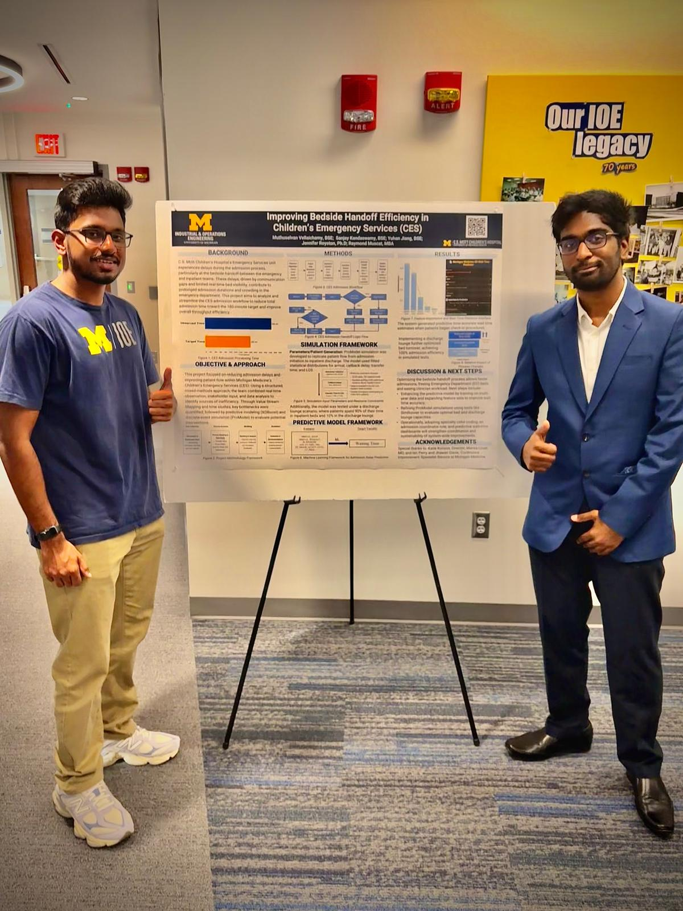
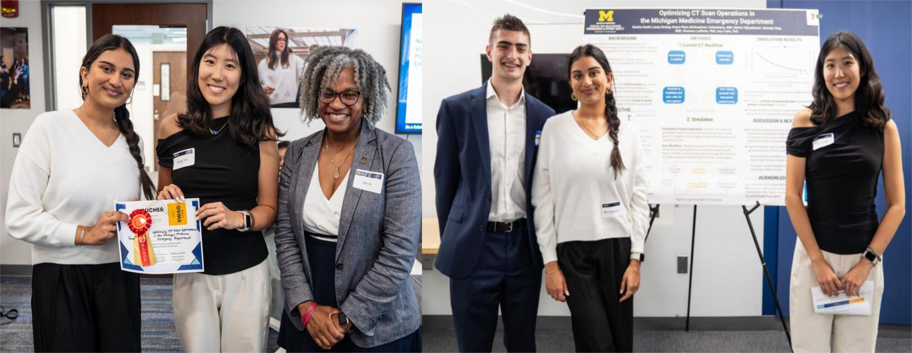
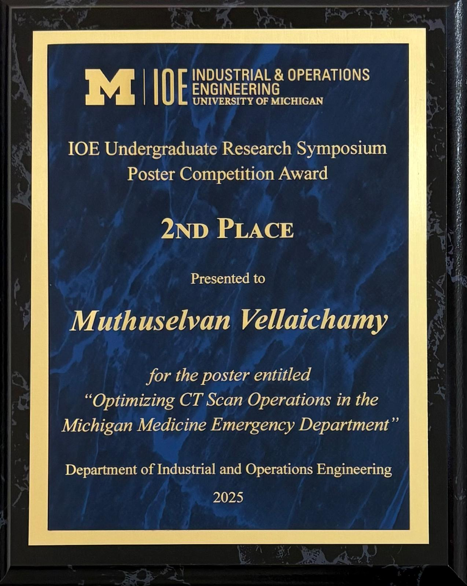
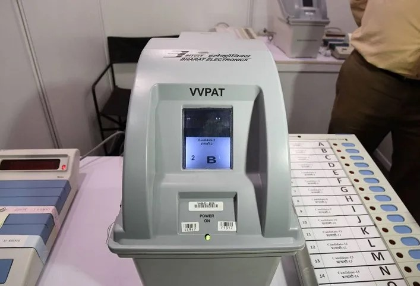
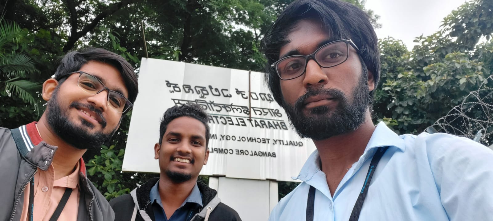
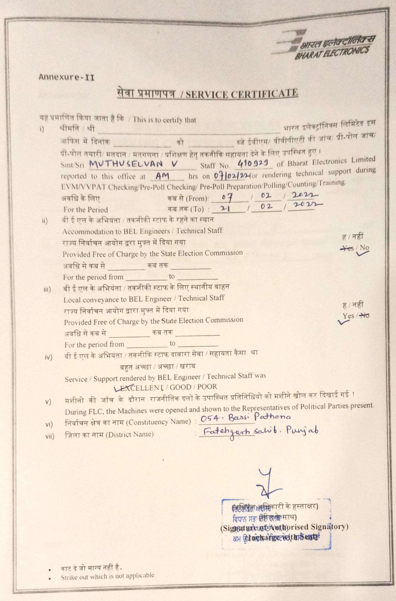
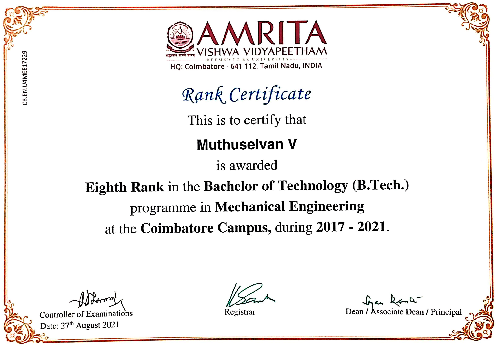

University of Michigan, Ann Arbor

Our IOE 591 (W25) project team was selected to present our research at the 2025 IOE Prospective Student Workshop, where exemplary projects were showcased to prospective students, faculty, and staff. The team consisted of myself, Sanjay Kandaswamy, and Yuhan Jiang, guided by Professor Raymond Muscat. We presented our data-driven analysis of the Children’s Emergency Services bedside handoff process, which involved workflow observation, time studies, and machine learning to model waiting times, as well as a discrete-event simulation to evaluate admission and transfer delays. Using findings drawn from over 35,000 patient records and validated through ProModel simulation inputs such as Gamma, Exponential, and Lognormal distributions, we highlighted opportunities to reduce admission delays and improve patient flow efficiency.
University of Michigan, Ann Arbor


Our IOE 591 (W25) project team was selected to present our research at the 2025 IOE Prospective Student Workshop, where exemplary projects were showcased to prospective graduate students, faculty, and staff. The team consisted of myself, Sanjay Kandaswamy, and Yuhan Jiang, guided by Professor Raymond Muscat. We presented our data-driven analysis of the Children’s Emergency Services bedside handoff process, combining workflow observations, time studies, machine learning for wait-time prediction, and discrete-event simulation to evaluate key operational delays. Using insights from 35,000+ patient records and simulation models built with Gamma, Exponential, and Lognormal distributions, we identified several opportunities for improvement. These included standardizing communication during handoff, adding clear specialty indicators in MiChart, initiating coordinated clinical teams earlier, enhancing discharge planning, and implementing predictive wait-time tools to support dynamic staffing and resource management. Our analysis highlighted actionable strategies to reduce bottlenecks and improve overall patient flow efficiency across CES operations.
Read more
Bharat Electronics Limited, Bangalore


I took on the role of project lead for the production of Voter Verifiable Paper Audit Trail (VVPAT) devices, a sub-project of the Electronic Voting Machine (EVM) program for India’s 2024 Parliamentary Elections. The target was to produce 124,000 VVPATs, and I was responsible for procurement, vendor coordination, and production planning while ensuring compliance with Election Commission standards. Working closely with the Development and Engineering team, I made sure construction and assembly followed specifications. I also managed E-Way Bills for material transport and maintained accurate records in SAP. With the combined efforts of our team, we successfully met the production goals on time, contributing to the smooth execution of the national elections.
Election Commission of India – Punjab Legislative Assembly Election Duty

In the 2022 Punjab Legislative Assembly election, I participated in election duty in Bassi Pathana, Punjab, India. I facilitated the commissioning and setup of Electronic Voting Machines (EVMs), conducted mock polls, and coordinated with a team of officials to manage the voting process. It was a demanding responsibility, and I received an excellent rating from my Election Incharge for the way I carried out my duties during the election.
Amrita Vishwa Vidyapeetham, Coimbatore

I graduated with distinction in 2021, earning a CGPA of 9.38/10 and securing 8th rank out of 250 students in my Mechanical Engineering batch. This achievement reflected steady effort and consistency across the program, helping me build a strong foundation in both core subjects and applied projects.
Coursework: Operations Research, Numerical Methods, Probability and Statistics, Calculus and Matrix Algebra, Computer
Programming, Computational Thinking and Problem Solving
{kind=link}
{kind=link}
{kind=link}
{kind=link}
{kind=link}
{kind=link}
{kind=link}